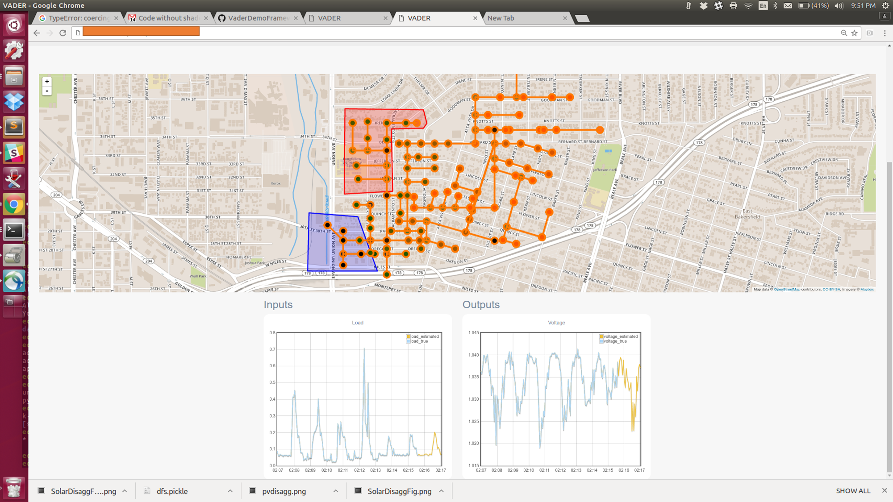

The increasing distributed energy resources (DERs) integration calls for new monitoring and operational planning tools to ensure stability and sustainability in distribution grids. One idea is to use existing monitoring tools in transmission grids and some primary distribution grids. However, they usually depend on the knowledge of the system model, e.g., the topology and line parameters, which may be unavailable in primary and secondary distribution grids. Furthermore, a utility usually has limited modeling ability of active controllers for solar panels as they may belong to a third party like residential customers. To solve the modeling problem in traditional power flow analysis, we propose a data-driven approach to reveal the mapping rules between different variables and recover useful variables based on physical understanding and data mining. Specifically, we illustrate how to use our machine learning tool to conduct 1) system monitoring with asynchronous measurements in distribution grid with DER and 2) short-term prediction of potential voltage violation for operational planning. The superior performance of our method is demonstrated numerically by comparing our proposed method with other methods. This software is being validated and adopted by South California Edison Data.
